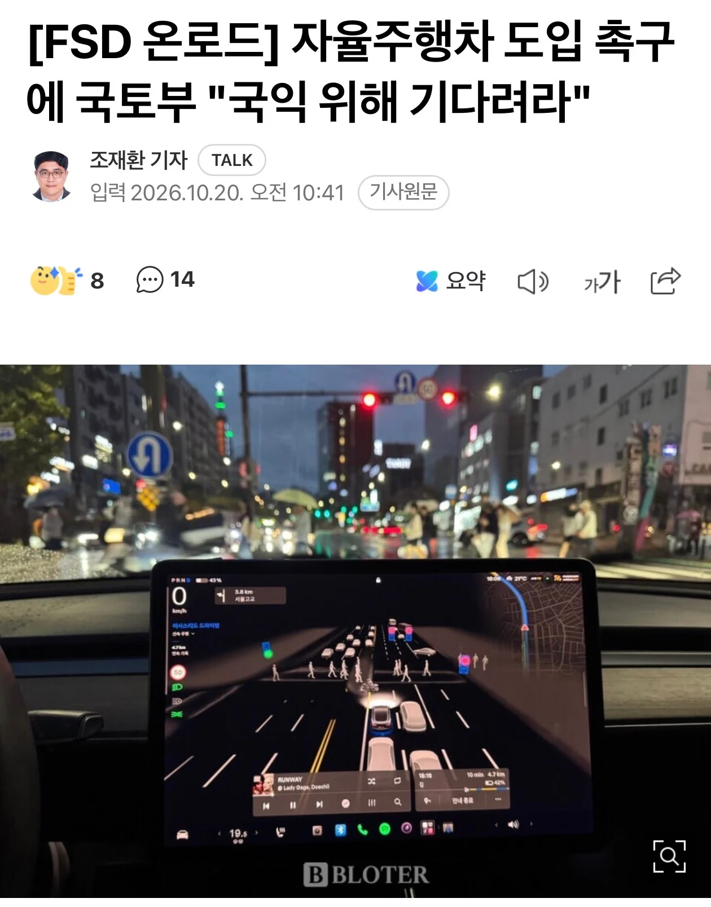

ㅋㅋㅋㅋㅋㅋㅋㅋㅋㅋㅋㅋㅋㅋㅋㅋㅋㅋㅋㅋㅋㅋㅋ

ㅋㅋㅋㅋㅋㅋㅋㅋㅋㅋㅋㅋㅋㅋㅋㅋㅋㅋㅋㅋㅋㅋㅋ
특정 기업의 이익이 왜 국익?
알았으면 가격 쳐 내리라고
근데 이건 다른나라도 하는거긴함 fsd가 아니라 자국산업 보호한다고 어느정도 쿠션이 생기고 도입시키겠지 현기가 무너지면 진짜 도산하는건 진짜 개많아서
테슬람들은 그런거 모름 ㅋㅋ fsd 도입 되면 지들 인생 드라마틱하게 변할 줄 앎
삶의 질은 유의미하게 확실히 올라가긴할듯
장벽치면서 시간 끌면 해결될 일이 아닌거 같은데, 기술격차 좀 있지 않나? 오히려 위험 감수하고 선제적으로 도입해서 빠르게 문제점 파악하고 자율주행 인프라 구축하는게 더 기술발전에 득일듯
현기차가 국영기업이었어?
마운자로도 똑같은 이유인가 궁금하네 ㅋㅋ
국산차보다 일제오토바이가 더팔려서 고속도로 전용도로 진입 막아서 오토바이 비율 40%-> 10%로 내리고 운전면허학원 각종 치트키로 개나소나 면허 따게 만들어주고 막히니 시험 간소화해줘서 각종 미친새끼들까지 차사게 만든지 50년 얼마나 더 해줘야 된다는건지
현대차 성과급은 이제 국민에 똑같이 배분하도록!!!!!!!
워딩을 보아하니 기래기가 기래기한듯
이러다 나중에 가면 유럽에서 만 14~16세 이하는 면허없이 간단한 교육만 받아도 저속 초소형 전기차 몰 수 있단 법을 근거로
OECD 따라잡기 한다고 면허 초간소화로 만 14세 이상이면 30분짜리 영상만 시청해도 당일 바로 면허 퍼주는 짓거리 할까 봐 두려움